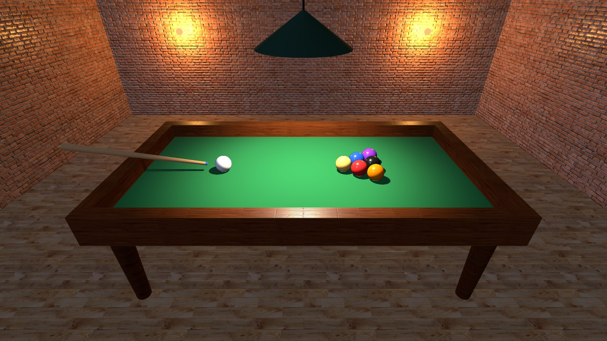
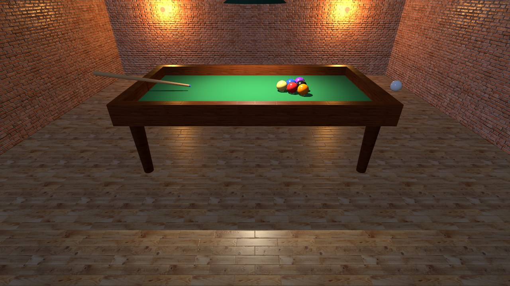
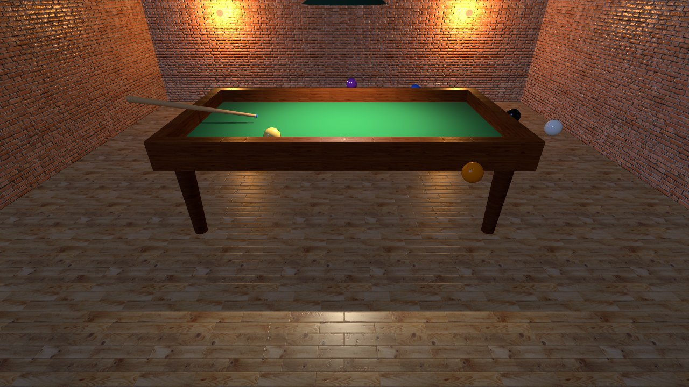

- Semestre 5 · Clase 10
- Unidad 2 · Clases y update
Programación Web
una sala de billar completa,
con class Pata y class Bola
Así quedó

Preciosa, pero todo está quieto 🥶
en tiempo real
Los rebotes y los choques son de la próxima clase
Hoy vemos
Clases a fondo · Update · Math · Arreglos
Así va a quedar al final de la próxima clase. Pueden jugar con la demo
En un videojuego cada enemigo, cada bala
y cada moneda es un objeto de una clase
Clases
pero las usamos sin ponerles nombre a sus partes.
Hoy se lo ponemos, una por una
class Bola
{
constructor(color, x, z)
{
this.malla = new THREE.Mesh(
new THREE.SphereGeometry(radioBola, 48, 48),
new THREE.MeshPhysicalMaterial({ color: color })
);
this.malla.position.set(x, alturaPano + radioBola, z);
scene.add(this.malla);
}
}
const blanca = new Bola(0xffffff, -2, 0);sin los detalles de Three.js
class Bola
{
constructor(color, x, z)
{
this.x = x;
this.z = z;
this.malla = new THREE.Mesh(/* ...usa el color... */);
scene.add(this.malla);
}
ponerEn(x, z)
{
this.x = x;
this.z = z;
}
}Parte 1 · el nombre
class Bola
{
// ...
}
const blanca = new Bola(0xffffff, -2, 0);Por convención el nombre lleva Mayúscula inicial
Parte 2 · el constructor
class Bola
{
constructor(color, x, z)
{
// ...
}
}
const blanca = new Bola(0xffffff, -2, 0);justo cuando escribimos new
Los parámetros: lo que le pasamos al new
const blanca = new Bola(0xffffff, -2, 0);
constructor(color, x, z)
El primero va al primero, el segundo al segundo... el orden importa
constructor(color, x, z)
Un repaso: el color se puede escribir de varias formas
| Forma | Cómo se escribe |
|---|---|
| número hexadecimal | 0xff0000 |
| texto con # | "#ff0000" |
| nombre en inglés | "red" |
| rgb en texto | "rgb(255, 0, 0)" |
| hsl en texto | "hsl(0, 100%, 50%)" |
| un THREE.Color | new THREE.Color(1, 0, 0) (valores de 0 a 1) |
Las seis hacen exactamente la misma bola roja
new Bola(0xff0000, -2, 0);
new Bola("#ff0000", -2, 0);
new Bola("red", -2, 0);
new Bola("rgb(255, 0, 0)", -2, 0);
new Bola("hsl(0, 100%, 50%)", -2, 0);
new Bola(new THREE.Color(1, 0, 0), -2, 0);Y para cambiarle el color a una bola que ya existe: color.set(...)
blanca.malla.material.color.set(0xff0000);
blanca.malla.material.color.set("red");
blanca.malla.material.color.set("skyblue");son variables temporales:
existen mientras corre el constructor y desaparecen
Parte 3 · guardar con this
class Bola
{
constructor(color, x, z)
{
this.x = x;
this.z = z;
this.malla = new THREE.Mesh(/* ...usa el color... */);
scene.add(this.malla);
}
}constructor(color, x, z)
{
x = x; // ❌ no guarda nada en la bola
}
update()
{
x += 1; // ❌ ¿cuál x?
}Uncaught ReferenceError: x is not defined
se llama propiedad
Es un dato que el objeto
recuerda mientras exista
this.x this.z this.mallaParte 4 · los métodos
class Bola
{
constructor(color, x, z)
{
// ...
}
ponerEn(x, z)
{
this.x = x;
this.z = z;
}
}Función suelta vs. método
Función
function ponerBola(bola, x, z)
{
bola.x = x;
bola.z = z;
}
ponerBola(blanca, 0, 0);
Método
class Bola
{
ponerEn(x, z)
{
this.x = x;
this.z = z;
}
}
blanca.ponerEn(0, 0);1. El método se escribe adentro de la clase
2. Se llama con un punto: blanca.ponerEn(...)
3. No recibe la bola como parámetro:
ya sabe cuál es, se llama this
blanca.ponerEn(0, 0); // aquí this es blancaroja.ponerEn(1, 1); // aquí this es rojaLa clase es el molde, los objetos son las galletas 🍪
Cada objeto tiene sus propios datos...
class → el molde
constructor → corre con cada new y recibe parámetros
this.dato → una propiedad (memoria)
método() → una función de la clase
La Bola de hoy, al final de la clase
Bola
propiedades (datos)
radio · x · z
vx · vz · malla
radio · x · z
vx · vz · malla
métodos (acciones)
update(delta)
rebotarEnBordes()
frenar(delta)
chocar(otra)
dibujar()
rebotarEnBordes()
frenar(delta)
chocar(otra)
dibujar()
constructor(color, x, z, vx = 0, vz = 0)
{
this.vx = vx;
this.vz = vz;
}
new Bola(0xffffff, -2, 0); // vx = 0 y vz = 0
new Bola(0xffffff, -2, 0, 4, 0.5); // vx = 4 y vz = 0.5Errores típicos con clases
| Error | Qué pasa |
|---|---|
| Pata(0, 0, 2, madera) | sin new: la clase no es una función |
| x = x | sin this: no se guarda |
| blanca.update | sin ( ): no se ejecuta |
| new bola(...) | nombre de clase en minúscula: no existe |
Prueba rápida
¿Qué imprime? const a = new Bola(0xffffff, -2, 0);
const b = new Bola(0xd62828, 3, 1);
b.ponerEn(0, 0);
console.log(a.x, b.x);
-2 y 0
Cada bola tiene su propia x: mover b no mueve a
Cada bola tiene su propia x: mover b no mueve a
Ejercicio 1:
A su Bola de la clase pasada agréguenle
this.x y this.z y un método ponerEn(x, z)
que la mueva a esa posición.
Prueben: blanca.ponerEn(0, 0)
A su Bola de la clase pasada agréguenle
this.x y this.z y un método ponerEn(x, z)
que la mueva a esa posición.
Prueben: blanca.ponerEn(0, 0)
Update
cómo hacer cosas en tiempo real
son muchas fotos por segundo,
cada una con el objeto un poquito más allá
Seis fotos de la misma bola
renderer.setAnimationLoop(animar);
function animar()
{
controles.update();
renderer.render(scene, camera);
}El ciclo de todo juego (el "game loop")
primero se calcula todo (update),
al final se dibuja (render)
BREAK 10 MINUTOS ☕
a su posición, en cada cuadro
function animar()
{
blanca.malla.position.x += 0.05;
controles.update();
renderer.render(scene, camera);
}Es el lugar donde se cambia lo que sea,
un poquito, en cada cuadro
Lo mismo de antes (sumar o restar un poquito), con otras propiedades
this.malla.rotation.y += 0.02; // gira
this.malla.scale.x += 0.01; // se estira
this.malla.material.color.offsetHSL(0.005, 0, 0); // cambia de color
this.malla.material.opacity -= 0.01; // se desvaneceCinco cosas distintas, todas dentro de update, al mismo tiempo
se puede cambiar en update
position · rotation · scale · opacity · color · visible
la intensity de una luz · la vida de un enemigo · el puntaje...
Hoy lo usamos para mover;
los juegos lo usan para todo
¿Quién se encarga de la bola: la función animar o la propia bola?
Mejor que cada bola se mueva sola: un método llamado update()
animar() solo le dice "actualízate"; la bola sabe cómo
Paso 1 · la bola recuerda dónde está y qué tan rápido va
class Bola
{
constructor(color, x, z)
{
this.radio = radioBola;
this.x = x;
this.z = z;
this.vx = 0;
this.vz = 0;
// ...la malla, igual que antes...
}
}vx, vz: la velocidad,
cuánto avanza por segundo en x y en z
La mesa es plana, así que trabajamos solo con x y z (la altura no cambia)
la malla solo los dibuja
Así la física son matemáticas simples, y Three.js solo pinta
Paso 1 · el método update()
update()
{
this.x += this.vx;
this.z += this.vz;
this.malla.position.set(
this.x, alturaPano + this.radio, this.z
);
}Paso 1 · y animar() solo le dice "actualízate"
blanca.vx = 0.05;
function animar()
{
blanca.update();
controles.update();
renderer.render(scene, camera);
}0.05 por cuadro × 60 cuadros por segundo
= 3 unidades por segundo
Pero... ¿en un computador que dibuja solo 30 cuadros por segundo?
Las dos bolas salen al tiempo. Cambien los cuadros por segundo
Abajo, la velocidad es la misma en todos
¿Cuál es el truco?
entre un cuadro y el anterior: delta
distancia = velocidad × tiempo
3 unidades por segundo × 0.016 segundos = 0.048 unidades en este cuadro
3 unidades por segundo × 0.016 segundos = 0.048 unidades en este cuadro
Math
Es un objeto que ya viene con JavaScript:
una caja de herramientas matemáticas
No se crea con new: se usa con un punto, Math.algo(...), y siempre con M mayúscula
Ya la han usado sin saberlo
piso.rotation.x = -Math.PI / 2;Una media vuelta: Math.PI = 180°, Math.PI / 2 = 90°
Algunas herramientas de Math
| Herramienta | Qué hace | Ejemplo |
|---|---|---|
| Math.min(a, b) | el menor | Math.min(3, 7) → 3 |
| Math.max(a, b) | el mayor | Math.max(3, 7) → 7 |
| Math.abs(x) | le quita el signo | Math.abs(-4) → 4 |
| Math.sqrt(x) | raíz cuadrada | Math.sqrt(9) → 3 |
| Math.random() | al azar entre 0 y 1 | 0.7314... |
Math.min: devuelve el menor de los números que le pasen
Math.min(3, 7) // 3
Math.min(10, 2, 7) // 2 (acepta más de dos)
Math.min(0.016, 0.05) // 0.016
Math.min(4.2, 0.05) // 0.05Sirve para poner un techo (y su contrario, un piso)
vida = Math.min(vida + 10, 100); // techo: nunca pasa de 100
vida = Math.max(vida - 10, 0); // piso: nunca baja de 0Prueba rápida
Si vida = 95 y recoge un botiquín de +10
vida = Math.min(vida + 10, 100);
100
Math.min(105, 100) = 100: el techo la frena
Math.min(105, 100) = 100: el techo la frena
Paso 2 · el reloj de Three.js
const reloj = new THREE.Clock();
function animar()
{
const delta = Math.min(reloj.getDelta(), 0.05);
blanca.update(delta);
controles.update();
renderer.render(scene, camera);
}Paso 2 · update recibe delta
update(delta)
{
this.x += this.vx * delta;
this.z += this.vz * delta;
this.malla.position.set(
this.x, alturaPano + this.radio, this.z
);
}Es un techo para delta
| Situación | getDelta() | delta |
|---|---|---|
| cuadro normal (60 fps) | 0.016 | 0.016 |
| computador lento | 0.033 | 0.033 |
| volvió de otra pestaña | 4.2 | 0.05 |
Paso 2 · la blanca con velocidad
blanca.vx = 3; // 3 unidades por segundo
Se mueve fenomenal... y se sale volando de la mesa 🚀 (a la derecha)
¿Y siete?
¿siete líneas update()?
(en inglés, arrays)
Una variable guarda un valor.
Un arreglo guarda varios, en orden
Un arreglo es una fila de casillas numeradas
Se crea con corchetes y comas
const notas = [3.5, 4.0, 2.8];
const nombres = ["Ana", "Luis", "Sofía"];
const bolas = [blanca, amarilla, azul];Para sacar uno: su posición entre corchetes
const bolas = [blanca, amarilla, azul];
bolas[0] // blanca (la primera)
bolas[1] // amarilla
bolas[2] // azulY para saber cuántas hay: length
bolas.length // 3 (cuántas hay)
bolas[bolas.length - 1] // azul (la última)Si piden una posición que no existe
bolas[3].update(delta); // ❌ solo hay 0, 1 y 2Uncaught TypeError: Cannot read properties of undefined (reading 'update')
bolas[3] vale undefined: "no hay nada ahí"
Prueba rápida
const colores = ["rojo", "verde", "azul"];colores[1] → "verde"
colores.length → 3
colores[3] → undefined
Para hacer algo con cada una: el for que ya conocen
for (let i = 0; i < bolas.length; i++)
{
bolas[i].update(delta);
}Hay una versión más corta, hecha para arreglos: for...of
for (const bola of bolas)
{
bola.update(delta);
}Paso 3 · un arreglo con todas las bolas y un for
const bolas = [blanca, amarilla, azul, roja, morada, negra, naranja];
function animar()
{
const delta = Math.min(reloj.getDelta(), 0.05);
for (const bola of bolas)
{
bola.update(delta);
}
controles.update();
renderer.render(scene, camera);
}desde el constructor (vx y vz, con valor por defecto)
const blanca = new Bola(0xffffff, -2, 0, 4, 0.5);
const amarilla = new Bola(0xffd166, 1.0, 0, -1.5, 0.8);
const azul = new Bola(0x1d4ed8, 1.36, -0.205, 0.6, -1.4);Paso 3 · todas con velocidad

Todas se mueven... y todas se escapan. Hay que ponerles paredes 🧱

Revisión
constructor (corre con new y recibe parámetros),
this (la memoria del objeto),
propiedades (datos) y métodos (funciones de la clase)
primero se calcula, después se dibuja, 60 veces por segundo.
Sirve para cambiar lo que sea (no solo mover)
y se mueve con velocidad × delta
Arreglos: [ ] y comas, la posición empieza en 0,
length dice cuántos hay, y se recorren con for o for...of
¿Algo que no cuadró?
La próxima clase
Las bolas ya se mueven... y se escapan de la mesa 😅
Les ponemos paredes (rebote), fricción
y las hacemos chocar entre ellas
Nos vemos la próxima clase
Si me quieren agregar
Correo institucional:
jjardila@libertadores.edu.co